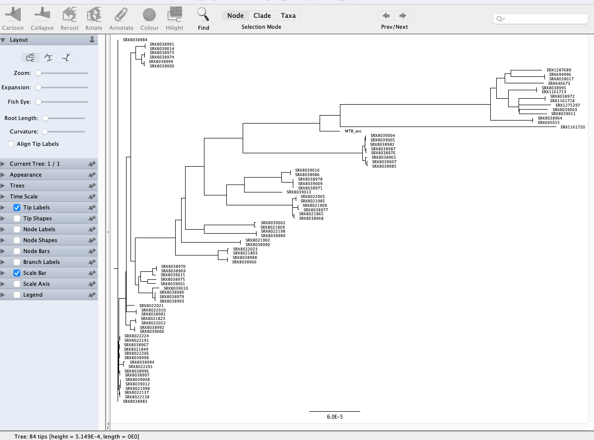
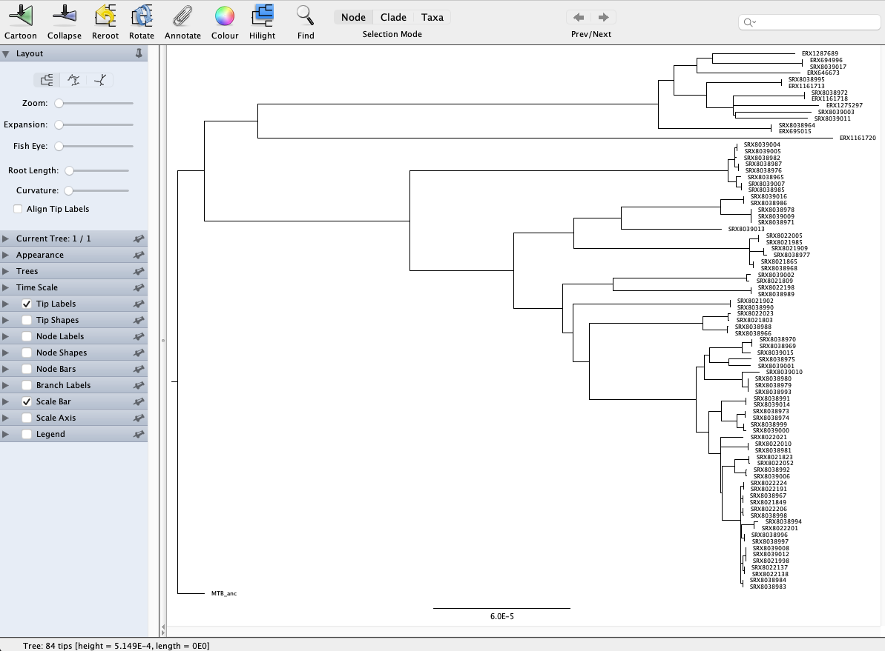

10.1 Introduction to Phylogenetics
Teaching: 90 min || Exercises: 40 min
Overview
10.1 Multiple sequence alignments
Phylogenetic methods require sequence alignments. These can range from alignments of a single gene from different species to whole genome alignments where a sample’s sequence reads are mapped to a reference genome. Alignments attempt to place nucleotides from the same ancestral nucleotide in the same column. One of the most commonly used alignment formats in phylogenetics is FASTA:
>Sample_1
AA-GT-T
>Sample_2
AACGTGTN and - characters represent missing data and are interpreted by phylogenetic methods as such.
The two most commonly used muliple sequence alignments in bacterial genomics are reference-based whole genome alignments and core genome alignments generated by comparing genes between different isolates and identifying the genes found in all or nearly all isolates (the core genome). As a broad rule of thumb, if your species is not genetically diverse and doesn’t recombine (TB, Brucella) then picking a suitable good-quality reference and generating a whole genome alignment is appropriate. However, when you have a lot of diversity or multiple divergent lineages (E. coli) the a single reference may not represent all the diversity in your dataset. Here it would be more typical to create de novo assemblies, annotate them and then use a tool like roary or panaroo to infer the pan-genome and create a core genome alignment. The same phylogenetic methods are then applied to either type of multiple sequence alignment.
10.2 Phylogenetic tree inference
A phylogenetic tree is a graph (structure) representing evolutionary history and shared ancestry. It depicts the lines of evolutionary descent of different species, lineages or genes from a common ancestor. A phylogenetic tree is made of nodes and edges, with one edge connecting two nodes.
A node can represent an extant species, and extinct one, or a sampled pathogen: these are all cases of “terminal” nodes, nodes in the tree connected to only one edge, and usually associated with data, such as a genome sequence.
A tree also contains “internal” nodes: these usually represent most recent common ancestors (MRCAs) of groups of terminal nodes, and are typically not associated with observed data, although genome sequences and other features of these ancestors can be statistically inferred. An internal node is most often connected to 3 branches (two descendants and one ancestral), but a multifurcation node can have any number >2 of descendant branches.

Tree topology
A clade is the set of all terminal nodes descending from the same ancestor. Each branch and internal node in a tree is associated with a clade. If two trees have the same clades, we say that they have the same topology. If they have the same clades and the same branch lengths, the two tree are equivalent, that is, they represent the same evolutionary history.
Uses of phlogenetic trees
In may cases, the phylogenetic tree represents the end results of an analysis, for example if we are interested in the evolutionary history of a set of species.
However, in many cases a phylogenetic tree represents an intermediate step, and there are many ways in which phylogenetic trees can be used to help understand evolution and the spread of infectious disease.
In many cases, we may want to know more about genome evolution, for example about mutational pressures, but more frequently about selective pressures. Selection can affect genome evolution in many ways such as slowing down evolution of portion of the genome in which changes are deleterious (“purifying selection”). Instead, “positive selection” can favor changes at certain positions of the genome, effectively accelerating their evolution. Using genome data and phylogenetic trees, molecular evolution methods can infer different types of selection acting in different parts of the genome and different branches of a tree.
Newick format
We often need to represent trees in text format, for example to communicate them as input or output of phylogenetic inference software. The Newick format is the most common text format for phylogenetic trees.
The Newick format encloses each subtree (the part of a tree relating the terminal nodes part of the same clade) with parenthesis, and separates the two child nodes of the same internal node with a “,”. At the end of a Newick tree there is always a “;”.
For example, the Newick format of a rooted tree relating two samples “S1” and “S2”, with distances from the root respectively of 0.1 and 0.2, is
(S1:0.1,S2:0.2);
If we add a third sample “S3” as an outgroup, the tree might become
((S1:0.1,S2:0.2):0.3,S3:0.4);
Methods for inferring phylogenetic trees
A few different methods exist for inferring phylogenetic trees:
- Distance-based methods such as Neighbour-Joining and UPGMA
- Parsimony-based phylogenetics
- Maximum likelihood methods making use of nuclotide substitution models
Distance-based methods
These are the simplest and fastest phylogenetic methods we can use and are often a useful way to have a quick look at our data before running more robust phylogenetic methods. Here, we infer evolutionary distances from the multiple sequence alignment. In the example below there is 1 subsitution out of 16 informative columns (we exclude columns with gaps or N’s) so the distance is approximately 1/16:

Typically, we have multiple sequences in an alignment so here we would generate a matrix of pairwise distances between all samples (distance matrix) and then use Neighbour-Joining or UPGMA to infer our phylogeny:

Parsimony methods
Maximum parsimony methods assume that the best phylogenetic tree requires the fewest number of mutations to explain the data (i.e. the simplest explanation is the most likely one). By reconstructing the ancestral sequences (at each node), maximum parsimony methods evaluate the number of mutations required by a tree then modify the tree a little bit at a time to improve it.

Maximum parsimony is an intuitive and simple method and is reasonably fast to run. However, because the most parsimonius tree is always the shortest tree, compared to the hypothetical “true” tree it will often underestimate the actual evolutionary change that may have occurred.
Maximum likelihood methods
The most commonly encountered phylogenetic method when working with bacterial genome datasets is maximum likelihood. These methods use probabilistic models of genome evolution to evaluate trees and whilst similar to maximum parsimony, they allow statistical flexibility by permitting varying rates of evolution across different lineages and sites. This additional complexity means that maximum likelihood models are much slower than the previous two models discussed. Maximum likelihood methods make use of substitution models (models of DNA sequence evolution) that describe changes over evolutionary time. Two commonly used substitution models, Jukes-Cantor (JC69; assumes only one mutation rate) and Hasegawa, Kishino and Yano (HKY85; assumes different mutation rates - transitions have different rates) are depicted below:

It is also possible to incorporate additional assumptions about your data e.g. assuming that a proportion of the the alignment columns (the invariant or constant sites) cannot mutate or that there is rate variation between the different alignment columns (columns may evolve at different rates). The choice of which is the best model to use is often a tricky one; generally starting with one of the simpler models e.g. General time reversible (GTR) or HKY is the best way to proceed. Accounting for rate variation and invariant sites is an important aspect to consider so using models like HKY+G4+I (G4 = four types of rate variation allowed; I = invariant sites don’t mutate) should also be considered.
There are a number of different tools for phylogenetic inference via maximum-likelihood and some of the most popular tools used for phylogenetic inference are FastTree, IQ-TREE and RAxML-NG. For this lesson, we’re going to use IQ-TREE as it is fast and has a large number of substitution models to consider. It also has a model finder option which tells IQ-TREE to pick the best fitting model for your dataset, thus removing the decision of which model to pick entirely.
Tree uncertainty - bootstrap
All the methods for phylogenetic inference that we discussed so far aim at estimating a single realistic tree, but they don’t automatically tell us how confident we should be in the tree, or in individual branches of the tree.
One common way to address this limitation is using the phylogenetic bootstrap approach (Felsenstein, 1985). This consist first in sampling a large number (say, 1000) of bootstrap alignments. Each of these alignments has the same size as the original alignment, and is obtained by sampling with replacement the columns of the original alignment; in each bootstrap alignment some of the columns of the original alignment will usually be absent, and some other columns would be represented multiple times. We then infer a bootstrap tree from each bootstrap alignment. Because the bootstrap alignments differ from each other and from the original alignment, the bootstrap trees might different between each other and from the original tree. The bootstrap support of a branch in the original tree is then defined as the proportion of times in which this branch is present in the bootstrap trees.
10.3 Activate the phylogenetics environment
mamba activate phylogeneticsDisk Usage I — Before analysis
Before we start performing any assemblies, let’s pause and check the space of our current working directory as we did for our previous lesson.
You can do this with the disk usage du command
du -hCurrent Disk Space In results/iqtree Directory
~247MB10.4 Phylogenetic inference of TB dataset
For the rest of this lesson we’re going to build a phylogenetic tree using the multiple sequence alignment we generated with nf-core/bactmap.
Variant site extraction with snp-sites
Phylogenetic inference software such as IQ-tree typically takes as input an alignment of just the variant sites in a multiple sequence alignment. So, before running IQ-tree, we need to extract the variant sites from the masked alignment. To ensure that the branch lengths are correctly scaled, we also need to tell IQ-tree how many invariant or constant sites there are in our multiple sequence alignment. To do both those things, we can use a tool called snp-sites.
Phylogenetic tree inference with IQ-TREE
10.5 Visualization of phylogenetic trees
Depending on what you want to do with your phylogenetic tree, there are many programs that can be used to visualise phylogenetic trees. Some of the most commonly used standalone tools are iTOL, Microreact and Figtree. Increasingly, there is a move to visualizing and annotating your trees using R and Python packages. For the purposes of today’s lesson we’re going to visualize your trees in Figtree showing how trees can quickly and easily be manipulated just by opening the file containing the tree data. We’ve also provided an exercise showing how we could also do this using the ggtree package in R.
Visualizing your phylogenetic trees with Figtree
FigTree is a very established piece of software as it provides a simple user graphical user interface and can be used to produce publication-ready figures. We don’t cover Bayesian phylogenetic methods for creating time-scaled phylogenies but displaying these kind of trees is what FigTree was designed to do.
The first thing we’ll need to do is copy the phylogenetic tree we created to your Desktop:
cp results/iqtree/aligned_pseudogenomes_snps.fas.treefile DesktopOpen FigTree, then go to File > Open… and browse to the Desktop folder.
Select the file with .treefile extension and click Open. Then click OK on the Input dialogue that pops up. You will be presented with a visual representation of the tree:

We’re currently looking at an unrooted tree so the first thing we’re going to do is to root the tree with the MTB ancestral sequence (labelled MTB_anc in the tree). Rooting a tree with a more distantly related lineage or species is important as it enables a better representation of the evolutionary history of the samples you’re working with. To root our tree, click on the branch leading to MTB_anc and click the Reroot button at the top of the window. Now you’ll see a different representation of the tree compared to the one we first loaded:

We can also import a “tab-separated values” (TSV) file with annotations to add to the tree. We’ve provided a TSV file (data/tb_metadata.tsv) which contains the metadata for the isolates in our tree. You can prepare this file in Excel or another spreadsheet program. To load the annotation, go to File > Import annotations… and open the annotation file. The first thing we’re going to do is replace the ENA run accessions with the real names of our samples. On the menu on the left, click Tip Labels and under “Display” choose the TBNm_ID field of our metadata table. You’ll see that the tip labels have now been replaced with the correct sample names. FigTree is pretty flexible in what it allows you to do. For now we’ll just change the colours of the tip labels to reflect the sub-lineage of the samples. Again, under Tip Labels click “Colour by:” and change “User selection” to Sub-lineage. It’s also good practice to add a legend to our figure. At the top of the window click Annotate and select Sub-lineage then go to Legend, click the tick box and under “Attribute” select Sub_lineage. A legend should now be displayed. Finally click Align Tip Labels to line up our sample names on the left hand side of the figure. You should have a figure that looks something like this:

We loaded a few different types of information in our metadata TSV file. Have a go at changing/adding the metadata in the tree:
- Colour the labels according to the MDR status of the samples and update the legend.
- To change the label colour to show the MDR status for each sample, click Tip Labels and under “Display” choose the
MDRfield of our metadata table. To update the legend, click Annotate and selectMDRthen go to Legend, click the tick box and under “Attribute” selectMDR.

Disk Usage II — Cleaning up after analysis
Now that we are done investigating our assembling and annotating our genome, let’s pause again and check the space of our current working directory.
You can do this with the disk usage du command
du -hHow much disk space have you used since the start of the analysis?
10.6 Deactivate phylogenetics environment
Now that we are done with all our analysis, let’s deactivate the phylogenetics environment:
mamba deactivateCredit
Information on this page has been adapted and modified from the following source(s):
https://github.com/cambiotraining/sars-cov-2-genomics